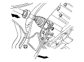
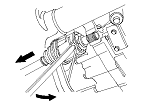
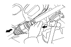

-
D17A2 engine model left and right driveshaft, K20A9 engine model left driveshaft: Pry the inboard joint from the differential case with a prybar.
K20A9 engine model right driveshaft: Drive the inboard joint off of the intermediate shaft with a drift and hammer. Remove the driveshaft as an assembly. Do not pull on the driveshaft, because the inboard joint may come apart. Pull the driveshaft straight out to avoid damaging the oil seal.
|
D17A2 engine model left and right driveshaft

K20A9 engine model left driveshaft

K20A9 engine model right driveshaft

|